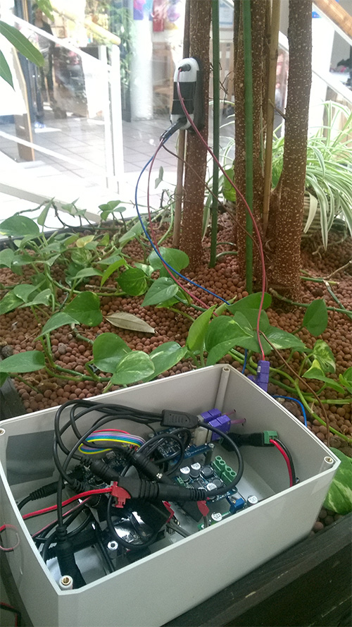
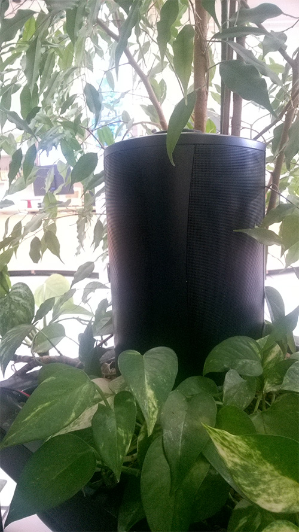

Concerto pour flux de sève, détail de l'installation, avec Nicolas Bralet, François-David Collin et Sabrina Issa. Curiositas Hors-les-murs, Médiathèque François Mitterand, Les Ulis, avril 2017.
CONCERTO POUR FLUX DE SEVE
C'est autour des arbres, que Concerto pour flux de sève, s’attache à rendre audible le rythme biologique des plantes et la corrélation, complexe, de ceux-ci avec les données environnementales. Les données météorologiques du site et le flux de sève ascendant dans les arbres deviennent une matière sonore, spatialisée à la manière d’un orchestre.
Dans l’installation, c’est notre cheminement qui nous communique le rythme, l’intensité et les variations d’un environnement où les évolutions sont partagées. Dans ce projet, notre démarche vise à rendre une dimension « physique » de la forêt émotionnelle et tangible en réunissant sur un même temps l’analyse et l’expressivité du vivant.

Concerto pour flux de sève, détail de l'installation, avec Nicolas Bralet, François-David Collin et Sabrina Issa. Curiositas Hors-les-murs, Médiathèque François Mitterand, Les Ulis, avril 2017.

Concerto pour flux de sève, détail de l'installation, avec Nicolas Bralet, François-David Collin et Sabrina Issa. Curiositas Hors-les-murs, Médiathèque François Mitterand, Les Ulis, avril 2017.